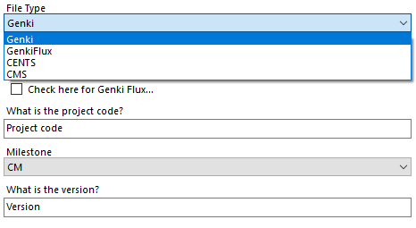
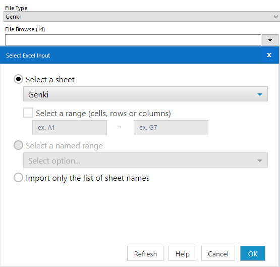
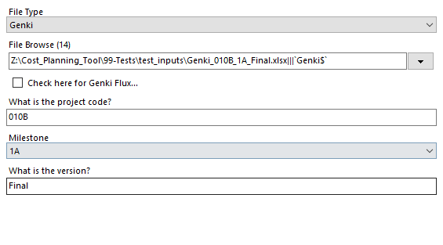
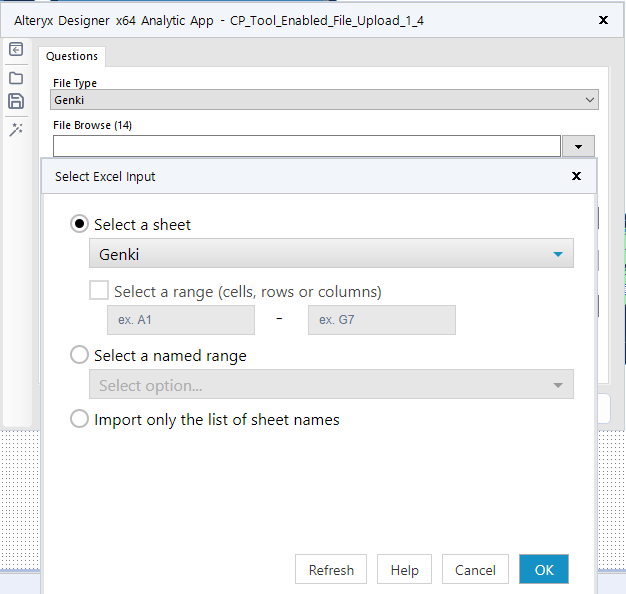
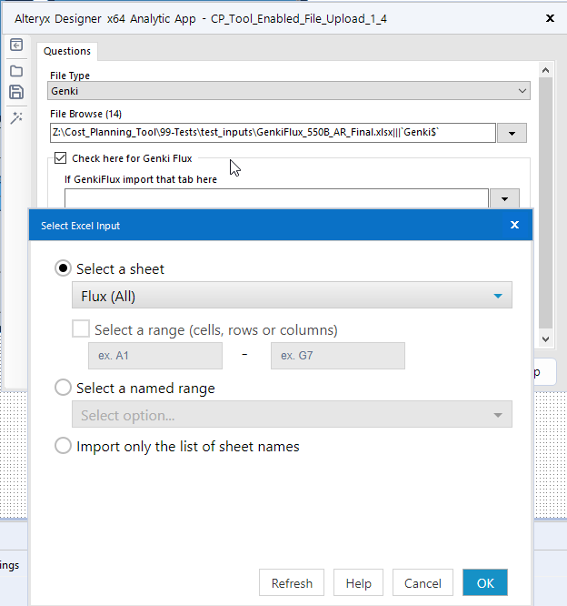

Upload file(s)
Table of Contents
Upload Genki, Cent$, or CMS file
Video Walk-through
Text Walk-through
To upload either a Genki, Cent$, or CMS file you will follow the same steps. First once in the Gallery select the appropriate option in the file type drop down box
Then select the file you wish to upload for further processing. You will have to select the appropriate sheet if it is not selected by default.
Note
The file selected in this example has the file type, project code, milestone, and version in the filename. You DO NOT have to use this naming convention. Any file you upload will use the inputs you provide in the prompt to determine these values.
Then manually enter your project code and version. Also select the appropriate Milestone from the drop down box.
Note
If you do not see the Milestone you need for your project please reach out to the IRCM to have them update the available options
Upload GenkiFlux
Video Walk-through
Text Walk-through
To upload a GenkiFlux document first select ‘GenkiFlux’ as the file type.
Then select the GenkiFlux file you are trying to upload. For this file browse input make sure to select the sheet in the workbook that contains the ‘Genki’ data.
Next click on the “Check here for Genki Flux” box and used the file browse input to upload the GenkiFlux sheet from your workbook.
Then manually enter your project code and version and select the appropriate Milestone from the drop down box.

Note
If you do not see the Milestone you need for your project please reach out to the IRCM to have them update the available options